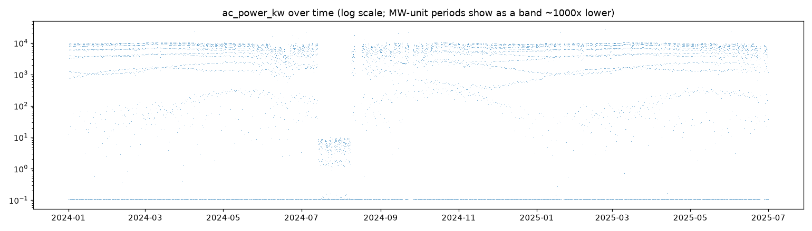
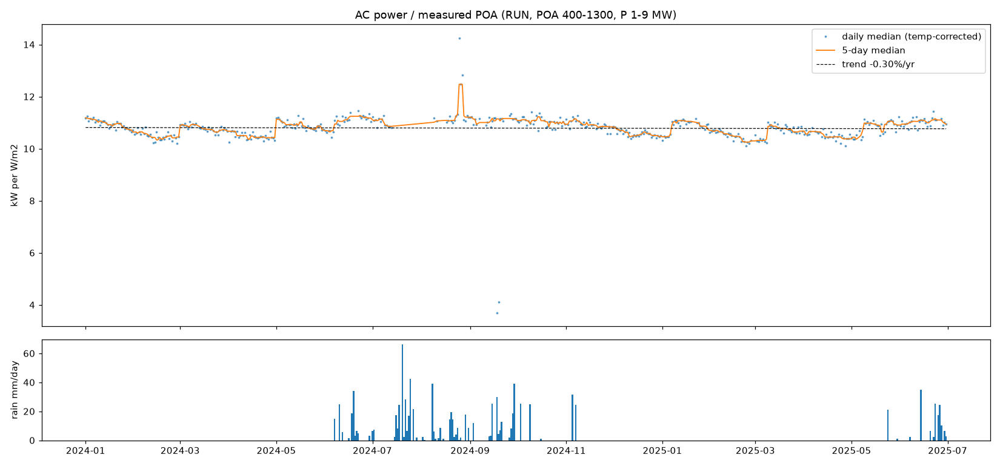
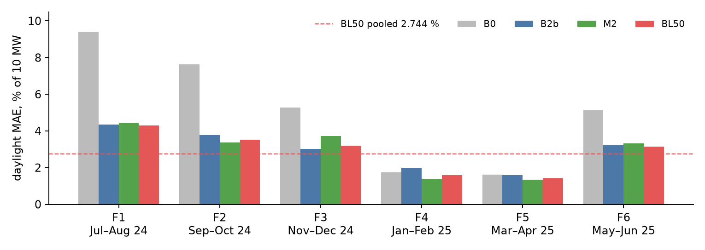
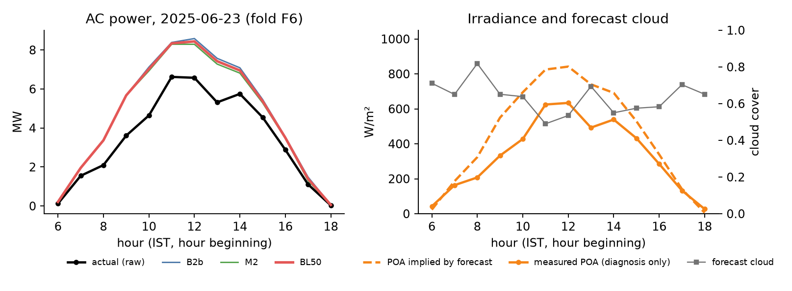

This note is about how I got to the submitted model and how I checked it. Every number here comes from files in the
project (experiments/results/, reports/, NOTES.md), or I recomputed it from them for this note.
I say which validation each number comes from, because partway through I found leakage in my first validation and
replaced it (section 7).
Every afternoon the plant has to declare tomorrow's hourly AC export. At that point all I have is the timestamp and
four day-ahead forecast columns: cloud cover, air temperature, wind and humidity. The training file also contains
measured plane-of-array irradiance (POA), module and ambient temperature, rainfall, SCADA status and AC power. None of
those exist for tomorrow, so I only use them to clean the data, calibrate physical parameters on history, and diagnose errors.
I never use them as model inputs, and src/features.py asserts that no measured_*, rainfall,
status or ac_power* column gets into the feature matrix.
What makes the test period hard is that it is monsoon. Forecast cloud over Jul–Aug 2025 daylight hours averages 0.80, against 0.70 in Jul–Aug 2024, and 77 % of test daylight hours are forecast at ≥ 0.7 cloud. Only one monsoon exists in training, and 26 days of it were logged in the wrong unit. So every modelling choice came down to one question: what happens when the model has to extrapolate into heavy, uncertain cloud?
train.csv is described as an unprocessed historian export, so before any modelling I ran a read-only audit
(src/audit.py), and then wrote numbered cleaning rules (src/clean.py). Each rule logs how many rows
it touched. Rows are never silently deleted: bad values become NaN and unusable hours get a flag (train_ok = False).
| Issue found | Count | What I did |
|---|---|---|
Two timestamp formats (ISO and day-first DD-MM-YYYY HH:MM) | 12,589 / 389 | Parse both. 207 rows have a first field > 12, which proves the second format is day-first. |
| Appended block: 2024-06-10 00:00 – 06-16 23:00 placed after 2025-06-30 | 165 rows | These hours don't appear anywhere else, so the data is misplaced, not duplicated. Sort. |
| Duplicated hours (72 rows) | 36 h | 24 identical. 12 differ, only in power: 2 kept the copy within 10 % of expected, 5 used the mean, 3 night → 0, 2 → NaN. |
| Missing hours (incl. 48 h on 2025-01-20/21) | 186 | Left missing. No target imputation. |
| Sentinels −999 / 9999 | power 67, POA 52, Tmod 39, Tamb 26, wind 14 | → NaN per column (counted before de-duplication). Test has 19 rows with bad forecast values, which get filled (section 6). |
| Power logged in MW: 2024-07-14 06:00 → 2024-08-08 18:00 | 333 values | Training: positive values ×1000. Validation: excluded, not rescaled. |
| Impossible spikes 11.5–26.9 MW / marginal overshoot 10.0–10.07 MW | 13 / 16 | Spikes → NaN. Overshoot clipped to 10,000. |
| Flatlines: power 2,187.44 kW for 48 h (2024-09-18/19); POA 412.6 W/m² for 70 h (2024-08-25..27) | 48 / 70 | Power → NaN. For the POA flatline only POA → NaN, and power is kept. |
| Rule 11: power / expected > 1.5 with POA > 100 W/m² | 10 | → NaN (added later, see below). |
| Night-time negative power (standby draw) | 3,282 | → 0 in the training target. |
| Messy status strings; STOP / PARTIAL / missing | 1,219 changed; 120 / 149 / 432 | Normalised. STOP, PARTIAL and NaN-power hours flagged out of training. |
After cleaning: 12,942 rows, of which 12,290 are train_ok (6,199 in daylight).
How I caught the MW interval. On a log-scale time series of power (Fig. 1) a block of daytime values sits about 1,000× below everything else. On the 26 affected days, the median of daily max power / daily max POA is 0.0108, against 10.05 on normal days (927×). Of the 282 daylight hours in the window with POA ≥ 100, 281 read between 0 and 50. Outside the window, only 2 non-STOP hours do. I only multiplied positive values, because the night-time negatives inside the window are still kW-sized (−1.5 to −11.5 kW, the usual standby draw). Rescaling them would have created −10 MW readings. After the fix, median power/POA inside the window is 10.80, which matches the clean-panel monsoon level.

ac_power_kw, log scale (non-positive values drawn at the 0.1 floor). The band at 1–10 in Jul–Aug 2024
is the MW-logged interval. This is the one monsoon period in training, so if I had missed it, a model would have learned that monsoon
days produce almost nothing.Other judgement calls.
10.8 × POA × (1 − 0.0035(T − 25)).
If neither copy was within 10 % in daylight, I set the hour to NaN rather than guess.reports/ratio_spikes.csv). There are 10 isolated hours with
ratio 2.0–3.0 (the 99th percentile is about 1.08), and none of them is a copy of a neighbouring hour. So they are not a simple timestamp slip.
I chose the POA > 100 threshold on physical grounds, because POA > 200 would have missed the triggering case. I did find this
through the error analysis, which is exactly why the final validation excludes such rows rather than repairing them.Temperature-corrected power/POA (RUN hours, POA 400–1300, 1–9 MW) shows a clear sawtooth (Fig. 2). In the dry season the ratio decays about 0.08–0.15 %/day, roughly 5–8 % per cycle. It then jumps back 4–7 % on days with no rain: 2024-03-01, 2024-05-01, 2025-01-07, 2025-03-09 and 2025-05-09. These look like manual cleanings roughly every two months. From June to October the ratio stays flat and high (median about 11.1), which is consistent with rain keeping the panels clean. Degradation (a trend of −0.30 %/yr) is negligible over the test horizon.

This matters because the test months fall in the clean state. A model trained on raw power learns, on average, a partly
soiled plant. So in production I built a soiling-corrected target: ac_power_clean = min(ac_power_kw / soiling_factor, 10000).
The factor is a 7-day centred rolling median of the daily ratio, divided by the Jun–Oct median of the whole file (11.087),
then time-interpolated and capped at 1 (range 0.926–1.000; Jul 0.997, Aug 1.000). As a description of history it works. As an input
to validation it is a problem: the value on any day depends on the next few days and on a baseline computed from months that may come
after the validation window. Section 7 covers this.
The comparisons in this section were run on my original folds (src/validate.py: F1 = train ≤ Jun 2024 /
test Jul–Aug 2024; F2 = same test with all other data as training; F3–F8 = one month each, Jan–Jun 2025). I made my model
choices with these folds, so I report them as the record of how I decided. They are not performance estimates, because that validation
turned out to leak (section 7). MAE is % of 10 MW on daylight train_ok hours against ac_power_kw.
| Step | What it is | F1 / F2 MAE % | What I learned | Kept? |
|---|---|---|---|---|
| B0 | Month × hour climatology | 7.43 / 7.13 | A floor. It can't tell a clear day from a monsoon day. | Benchmark |
| B1 | Ineichen clear sky → POA → power, no cloud | 10.26 / 9.77 | Best in clear hours (1.6 %), 13.8 % in overcast hours. All the monsoon skill has to come from the cloud mapping. | No |
| B2a | + Kasten-Czeplak cloud factor (a = 0.75, b = 3.4) | 4.98 / 5.12 | The textbook curve attenuates too hard for this noisy forecast. | No |
| B2b | + cloud curve 1 − a·Cb fitted to measured clearness | 4.38 / 4.06* | Fitted a ≈ 0.56–0.63: full forecast overcast removes only 56–63 % of clear sky. | Yes |
| M1 | LightGBM on power, monotone decreasing in cloud | 4.57 / 4.64 | Worse than physics. Biased low (−113 / −186 kW) and weak in clear hours. | No |
| M2 | LightGBM on the ratio power / B2b | 4.10 / 4.05 | Best single model, and it removes most of B2b's over-prediction. | Yes |
| M3 | LightGBM on the residual power − B2b | 4.33 / 4.12 | Anchored like M2, but behind it on both monsoon folds. | No |
| BL50 | 0.5·B2b + 0.5·M2 (fixed config) | 3.92 / 3.86† | Lowest monsoon error, because the two components' errors partly cancel. | Final |
* B2b with fitted_dry turbidity. From reports/model_comparison.csv. The M1 row is the raw-target variant (M1_clean: 4.66 / 4.44). The M2 and M3 rows are the soiling-corrected-target variants (M2_kw 4.19 / 4.18, M3_kw 4.23 / 4.25). † After rule 11, from reports/final_choice_stdout.txt (BL50 was also scored on F8, June 2025: 3.84).
Why plain LightGBM struggled. F1 has no monsoon months in training, and M1 came out biased low there. My reading is that the trees can't extrapolate, so M1 predicted monsoon days from the nearest leaves it had. Even in F2, which does see other monsoon months, it was biased low (−186 kW). Adding monotone constraints on the cloud features didn't fix it, which suggests the problem is the target level rather than the direction of the cloud effect.
Why the ratio formulation helped. M2 learns a multiplicative correction to a physics forecast. The idea is that in conditions it hasn't seen, the trees can only return ratios they learned on history, so the prediction stays tied to physics instead of to the training mean. A multiplicative correction also scales with irradiance: a 10 % optimism at midday is the same leaf as a 10 % optimism at 08:00. M3 (the additive residual) loses that property. It lost to M2 on both monsoon folds and was marginally behind on the dry folds (1.82 vs 1.80 %), so I rejected it. Below 200 kW of physics power the ratio is unstable, so M2 returns plain physics there.
Why a blend, and why fixed. On the monsoon folds B2b over-predicted (+208 kW) and M2 under-predicted (−113 kW), and the blend's bias was +47 kW. The gain was largest in partly cloudy hours. Before running the comparison I wrote down a decision rule: pick the simplest model within 0.1 pp of the best monsoon mean, in the order B2b < BL50 < BL_cloud (cloud-dependent weights) < M2. BL50 was the best, at 3.87 against 3.95 for BL_cloud, and it has no fitted weights. I kept the equal weighting because fitting weights on three monsoon months would have been fitting to noise.
Freezing the hyperparameters. Originally M2 chose leaves ∈ {15, 31} and rounds by early stopping on the last 20 % of each
fold's training period. In the original (pre-rule-11) tuning run the chosen iterations were 258, 84, 1381, 705, 1317, 115, 75 and 332 across the eight folds. A spread that
wide says the inner validation was noisy, not that the folds need different models. So I froze 15 leaves and 295 rounds (the median),
and averaged five seeds (42–46) to damp bagging noise. In the post-rule-11 re-run the fixed config was within ±0.12 pp of the tuned one on every fold, with no
systematic sign. It is also deterministic, so predictions.csv is reproducible byte-for-byte.
src/solar.py)fitted_dry). Jun–Sep use pvlib's climatological TL × the mean fitted/default
ratio, which is 1.202 on the full training set (Jun 5.89, Jul 6.07, Aug 6.31, Sep 5.95). The reason: when I fitted every month, August came
out at 8.0, the grid ceiling. A monsoon month has no genuinely clear days, so TL was soaking up cloud. Worse, that value had never been
validated, because in F1/F2 Jul–Aug were outside training and only the fallback path was ever exercised. fitted_dry makes the
submitted model use exactly the path that was tested.GHI = GHIcs · (1 − a·Cb). a and b are grid-fitted by least squares to measured
clearness POAmeas/POAcs (clipped to 1.2) on training hours with sun > 10°. Production: a = 0.56, b = 4.4.
Across the validation folds: a = 0.56–0.63, b = 4.3–5.3. I fit on POA clearness but apply the factor to GHI before decomposition.
At 15° tilt the two ratios are close, but it is an approximation.1 − 0.0035·(Tcell − 25).P = 12,500 · POA/1000 · fT · L. L = Σ actual / Σ model over training hours that are
train_ok, sun > 15°, measured clearness ≥ 0.8, forecast cloud ≤ 0.3 and power < 9,500 kW (unclipped). So L is calibrated only
where the forecast and the sky agreed it was clear. It absorbs everything I don't model explicitly: inverter, wiring, mismatch and residual soiling.Only three things are fitted: TL, (a, b) and L. They are nearly identical across folds (L = 0.855–0.863 in validation), which is part of why I trust this model as the anchor.
y / B2b on training hours that are train_ok, in daylight, with finite y and B2b ≥ 200 kW.
In production y = ac_power_clean (5,688 rows) and the B2b it divides by is refitted on the same data.deterministic=True. Seeds 42–46 are trained separately and their ratios averaged.M2 = B2b · max(ratio, 0) where B2b ≥ 200 kW, else B2b. Then BL50 = 0.5 × B2b + 0.5 × M2, set to 0 at
night and clipped to [0, 10,000].I kept the blend for observed reasons, not on the principle that ensembles are good. B2b and M2 fail differently. B2b is best in clear hours and systematically optimistic in partly cloudy and overcast ones. M2 removes most of that optimism, but it is a tree model trained on one monsoon. Averaging trades a little clear-sky accuracy for lower bias and lower variance where the test period actually is. The leakage-safe results (section 8) back the blend up modestly: BL50 is never the worst of the three in any fold. They don't make it a big win, though. Pooled, it beats M2 alone by only about 7 kW.
After I had frozen the model, I re-read my own validation code, asking of every line: could this number have known anything from after the forecast was issued? Several could.
| Problem in the original validation | Fix in experiments/leakage_safe_validation.py |
|---|---|
clean.py ran on the whole file before the folds were cut. | Raw rows are cut at the fold boundary first. Cleaning and fitting run on each training slice only. The script asserts max(train ts) < min(validation ts) and that the two sets are disjoint. |
| The soiling factor uses a centred 7-day median (3 days of future), a Jun–Oct baseline over all data (for F1 this included its own validation months), and interpolation/back-fill. | No soiling correction at all, because I could not build one without future data. The training target is row-cleaned ac_power_kw. |
Physical parameters were fitted per fold. TL and (a, b) use measured POA, but the loss factor L (and M2) were fitted against the leaked ac_power_clean. | FoldPhysics fits TL (fitted_dry), a and b on the fold's training rows, and L against the raw-based target, then freezes them. |
| Old F2 trained on Jan–Jun 2024 plus Sep 2024 – Jun 2025 to predict Jul–Aug 2024 (already labelled "optimistic"). | Six strictly forward folds. Each trains on everything from 2024-01-01 up to the cutoff and validates on the next two months. |
| Forecast gap filling could borrow the next day's forecast. | Same-day interpolation only. 7 wind entries were filled across all folds, and no rows were dropped. |
Scoring used rewritten targets: MW hours rescaled, duplicate means, ac_power_clean on the dry folds. | Scoring uses the raw ac_power_kw. Invalid hours are excluded, never rewritten: the MW window (605 rows in F1), conflicting duplicates, STOP/PARTIAL, missing status with low output, spikes, and the frozen logger. |
| BL50 and the 295 rounds were chosen on these same folds. | Not re-tunable after the fact. The frozen config is re-measured unchanged (15 leaves, 295 rounds, seeds 42–46, the same features, the same 200 kW floor, the same blend). |
run.py, but with a
causal-compatible raw target, because the production soiling correction depends on future information. Production (and the submitted
predictions.csv) trains B2b's loss factor and M2 on the soiling-corrected ac_power_clean. The validation trains both on
row-cleaned raw ac_power_kw. You can see the effect in the fitted loss factor: 0.886 in production, against 0.855–0.863 in the folds.
To measure the gap directly, I refitted the full production pipeline with the raw target and compared its test-period predictions with
the submitted ones (experiments/target_gap.py; the production refit reproduces predictions.csv exactly, so the two runs
differ only in the target). The loss factor drops from 0.886 to 0.855. Over the 806 test daylight hours, B2b is 3.5 % higher in the
submitted model in every cloud bin, while M2 is essentially unchanged (+1 kW on average): dividing by a higher physics level is offset by a
lower learned ratio. The submitted BL50 therefore sits 70 kW (1.8 %) above the validated variant, and 66 kW above it in the overcast bin.
This is an output-level comparison of the two forecasts, not a measurement of test error. I think the clean target is the right one for a monsoon test period (soiling factor ≈ 1 in
Jul–Aug). But I have not measured the production target under leakage-safe conditions, and given the positive bias in section 9
it could make the submitted model more optimistic, not less. The other differences are minor: production's adjacent-day gap-fill fallback
(one night-time test row), and night = 0 at elevation < 0 against ≤ 0 in validation. I kept the clean target because it is the right
level for a monsoon test period and the measured shift is modest. The alternative would have been changing the submitted model after
seeing its validated bias.What is still not perfectly clean. Some constants come from auditing the whole training file: the MW-window and
flatline dates, and the 10.8 kW per W/m² expected-power coefficient used by the duplicate, spike and low-output rules. In the validation
they only decide which rows count as valid. They never fit a model or change a scored value. Rule 11 was also found through error analysis.
I judge the remaining effect to be small, but it isn't zero. The test period (2025-07-01 to 2025-08-31) was never read by the experiment:
it reads only train.csv, and every validation window ends by 2025-06-30 23:00. For the record, the old headline of
3.87 % (monsoon mean of the original F1/F2/F8) is superseded.
I report daylight MAE (sun elevation > 0). Night hours are 0 for every model, so they add perfect predictions: including them takes BL50 from 274.43 to 139.24 kW (7,420 rows) and says nothing about skill. MAE maps directly onto the energy mis-scheduled per hour. Pooled metrics are computed over all rows, not by averaging fold percentages. All four models are scored on identical rows.
| Fold | Validation window | Daylight rows | B0 kW (%) | B2b kW (%) | M2 kW (%) | BL50 kW (%) | BL50 bias kW |
|---|---|---|---|---|---|---|---|
| F1 | 2024-07-01 – 08-31 | 379 | 942.0 (9.42) | 435.1 (4.35) | 442.8 (4.43) | 431.0 (4.31) | +83.1 |
| F2 | 2024-09-01 – 10-31 | 595 | 762.0 (7.62) | 377.6 (3.78) | 337.8 (3.38) | 351.1 (3.51) | +20.1 |
| F3 | 2024-11-01 – 12-31 | 680 | 527.9 (5.28) | 301.4 (3.01) | 372.3 (3.72) | 320.2 (3.20) | +228.8 |
| F4 | 2025-01-01 – 02-28 | 581 | 173.4 (1.73) | 199.3 (1.99) | 136.8 (1.37) | 159.3 (1.59) | +0.6 |
| F5 | 2025-03-01 – 04-30 | 738 | 161.5 (1.62) | 158.7 (1.59) | 134.7 (1.35) | 140.9 (1.41) | +38.3 |
| F6 | 2025-05-01 – 06-30 | 723 | 512.7 (5.13) | 323.5 (3.23) | 332.0 (3.32) | 315.0 (3.15) | +36.6 |
| Pooled | Jul 2024 – Jun 2025 | 3,696 | 476.19 (4.762) | 287.14 (2.871) | 281.62 (2.816) | 274.43 (2.744) | +68.77 |
MAE in kW, with % of 10 MW in brackets. Bold = lowest of B2b/M2/BL50 in the fold. Pooled RMSE: B0 791.6, B2b 430.2, M2 422.4, BL50 412.1 kW.
Source: experiments/results/fold_results.csv and model_summary.csv.

How I read it:
The pooled 2.744 % is not my estimate for Jul–Aug 2025. It includes the easy dry months, and the test is cloudier than any validation fold. The previous estimate of about 4.2 % came from the superseded folds and I no longer use it. I re-derived it from the leakage-safe predictions:
test.csv: 806 hours with sun > 0, of which 22 / 165 / 619 fall in those bins
(2.7 / 20.5 / 76.8 %).| Basis | BL50 MAE by bin (kW): clear / partly / overcast | Own-mix MAE | Re-weighted to test | Bias at test mix |
|---|---|---|---|---|
| F1 (Jul–Aug 2024, same season) | 181 / 341 / 527 (n = 19 / 161 / 199) | 431 kW | 480 kW = 4.80 % | +101 kW |
| F1 + F2 pooled | 216 / 317 / 528 | 382 kW | 476 kW = 4.76 % | +106 kW |
| F1, overcast split 0.7/0.8/0.9 | — | — | 475 kW = 4.75 % | +86 kW |
| F6 (May–Jun 2025, monsoon onset) | 197 / 321 / 455 | 315 kW | 420 kW = 4.20 % | +92 kW |
Scenario estimate: roughly 4.8 % of 10 MW (about 475–480 kW) daylight MAE, with a slight over-prediction of about +100 kW, for the validated raw-target variant. For example, F1: 0.027 × 181 + 0.205 × 341 + 0.768 × 527 ≈ 480 kW. The other weightings in the table give 4.2–4.8 % and +86 to +106 kW. Two further sub-bin variants (F2 and F6 split at 0.8/0.9) gave 5.1 % and 5.7 %, but their top bin holds only 4 hours, so I don't lean on them. This is a spread of scenarios, not a confidence interval. Why it is only an estimate:
Worst valid day: 2025-06-23 (fold F6). BL50 daylight MAE was 1,143 kW over 13 scored hours. Daylight energy was 44.85 MWh actual against 59.71 MWh predicted, +33 % (B2b +35 %, M2 +31 %). Worst hour of that day, 10:00: actual 4,643 kW, BL50 7,026 kW (+2,383), forecast cloud 0.64.

Observed Status was RUN all day. For 08:00–16:00, actual power was 0.95–1.04× the expected power from measured POA, so the plant appears to have behaved normally. Pushing the measured POA through the same F6 temperature and loss steps gives 45.07 MWh, within 0.5 % of actual. Forecast cloud stayed between 0.49 and 0.82. Through the fitted curve (F6: a = 0.57, b = 4.4) that implies clearness 0.76–0.98, while measured clearness was 0.53–0.97. Over the day, forecast-implied POA was 36 % above measured. At 10:00 it was 695 W/m² against 428 W/m² measured.
Interpretation The measured-POA comparison suggests that the dominant error on this day was in the weather input, not in the power-conversion model. Blending can't help with that, because both components see the same cloud forecast and missed together. Cloud cover says nothing about how thick the clouds are. A "0.6" can be thin high cloud or a grey monsoon deck.
The rule I wrote in advance failed. Before the error analysis I set a rule: a day is "forecast wrong" if the mean |measured − forecast-implied clearness| over daylight exceeds 0.3. For this day it is 0.21, so the rule says "model wrong", which is the opposite of what the measured-POA check suggests. On the original folds no day ever reached 0.3 (max 0.22). The reason is the fitted curve itself: with b ≈ 4.4, clearness stays at 0.94 for cloud 0.6 and 0.88 for 0.7, and can never drop below 1 − a ≈ 0.43. The curve compresses the forecast into a narrow, optimistic band, so a 0.3 disagreement is almost impossible by construction. I kept the rule's result as recorded rather than move the threshold after seeing it, and I used the measured-POA attribution instead.
The pattern generalises. Four of the five worst days by MAE are daily-energy over-predictions of +28 to +33 % (2025-06-23, 2024-09-26, 2024-08-20, 2024-08-09). The fifth is the PARTIAL-affected 2024-11-19, described below. My earlier measured-POA attribution on the original folds classed 2024-08-20 and 2024-08-09 the same way as 2025-06-23: darker than forecast, with the power model within a few percent. The biggest under-prediction day in the top six is only −16 %. On F1+F2, BL50's bias is concentrated at midday: +156 kW for 10:00–13:00 (B2b +264, M2 +47), and about 0 in the mornings and afternoons. MAE relative to mean actual power is flat across the day (7.6–8.8 %). So the diurnal shape and timing are right, and the cloudy-day amplitude is optimistic.
The worst single hour looks like an availability event, not a forecast miss. 2024-11-19 13:00 (F3): actual 5,328 kW, BL50 9,012 kW (+3,684). Status is missing for that hour. The 12:00 row is absent, and 09:00–11:00 and 14:00–17:00 are all PARTIAL. Actual/expected is 0.63, in line with PARTIAL hours (median 0.64 for PARTIAL hours with POA > 300). My validity mask only drops missing-status hours below 0.5 of expected, so this one slipped through. The evidence is consistent with partial availability rather than weather. I left it in the reported metric, because removing hours after seeing the scores is exactly what the new validation is meant to prevent.
What I would do next (none of this is implemented):
I used Claude Code and a local Qwen model for coding and review assistance. I checked the resulting code, the validation logic and every reported number against the project artifacts.